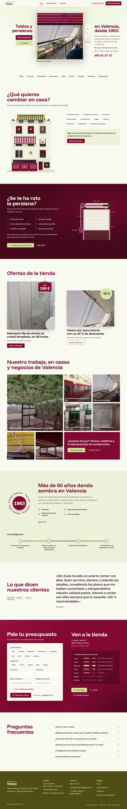

No puedes ver esta página porque han pasado más de 10 días desde su envío.
Si sigues con interés, escríbeme a jjuradogarciadelrio@gmail.com.

Persianas y Toldos Víctor
Si sigues con interés, escríbeme a jjuradogarciadelrio@gmail.com.
